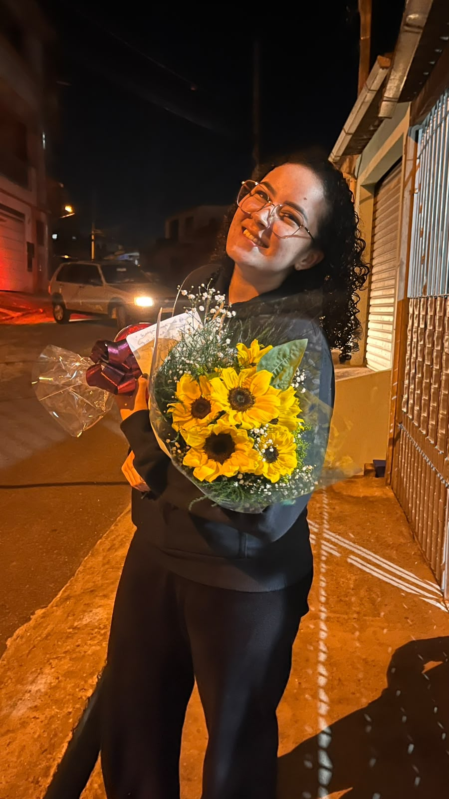

um cantinho só seu
Para a Sarah 🌻

o girassol mais lindo e belo que já vi
role pra baixo ↓
desde que a gente se viu
O tempo mais bonito
Cada segundo desde 25 de maio de 2026 conta. E continua contando.
0dias
0horas
0minutos
0segundos
entre Ribeirão Preto e Francisco Morato
A distância entre nós
No mapa parece longe. No coração, é do lado.
📍 — em linha reta
👣 cerca de — passos
💛 distância no coração: 0 km
…e mesmo assim, olhamos pro mesmo céu ✨
sobre a distância
Frases que lembram você
toque no girassol
Por que eu gosto de você
clica aí 👆
uma cartinha
Abra quando sentir saudade
💌
toque para abrir
Sarah,
Se tu me cativas, nós teremos necessidade um do outro. Serás para mim única no mundo. E eu serei para ti único no mundo. Só se vê bem com o coração, o essencial é invisível aos olhos.
Meu girassol não é como os outros, pois é o tempo que eu dediquei para ele que o tornou especial.
lov u 💛
Felipe